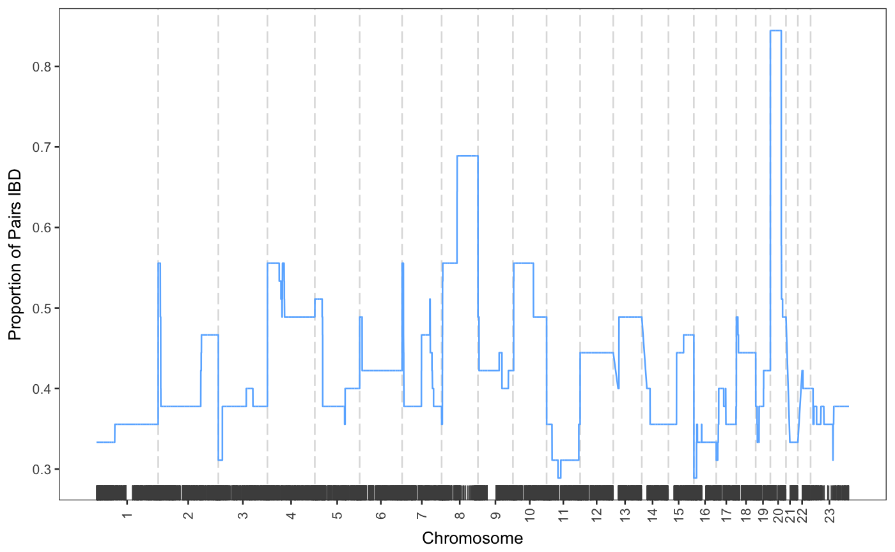

Plot the proportion of pairs IBD for each SNP across the genome. Annotation genes can be added to the plot and specific genes on interest can be highlighted.
plotIBDproportions(locus.proportions, interval = NULL, annotation.genes = NULL, highlight.genes = NULL, add.rug = TRUE, plot.title = NULL)
| locus.proportions | a data frame containing the proportion of pairs IBD at each SNP.
See |
|---|---|
| interval | a vector of length 3 containing a chromosome, a start position (bp) and an end position (bp)
of an interval to plot. The default is |
| annotation.genes | a data frame with at least 5 columns of information:
|
| highlight.genes | a data frame with at least 4 columns of information:
|
| add.rug | Logical. Whether to include SNP positions as a rug in the figure. The default is |
| plot.title | a character string of a title to be added to the plot. The default is |
# generate a binary IBD matrix my_locus_matrix <- getLocusMatrix(ped.genotypes = example_genotypes, ibd.segments = example_ibd) # calculate the proportion of pairs IBD at each SNP my_locus_prop <- getLocusProportion(ped.genotypes = example_genotypes, locus.matrix = my_locus_matrix, groups = NULL) # plot the proportion of pairs IBD plotIBDproportions(locus.proportions = my_locus_prop, interval = NULL, annotation.genes = NULL, highlight.genes = NULL, add.rug = TRUE, plot.title = NULL)